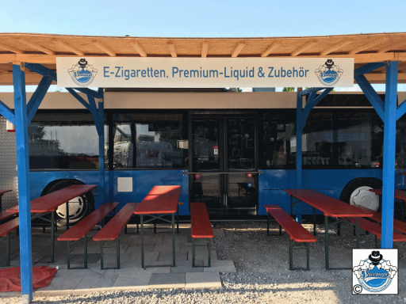

Streetvape – Ein Shop mit Ideen
posted 2018-06-21 by Elmaba
“Schrauben
– Waschen – Dampfen” so schaut die neueste Geschäftsidee aus
Großkarolinenfeld (Bayern) aus!
Manchmal braucht es halt nur gute und richtige Ideen! Thomas Fenner, seines Zeichens KFZ-Meister, eröffnete am 30.05.2016 auf seinem Gelände am Rande von Großkarolinenfeld (Bayern) seine neue Werkstatt: Die KFZ Schmiede. Ein Meisterbetrieb, der in seiner großen Halle mit vier Toren nicht nur Autos, sondern auch LKW und Wohnmobile “behandelt”. Egal ob Reparatur oder Pflege, alles was Räder hat, wird hier bestens versorgt. Sollte die Reparatur einmal länger dauern, stehen für den Kunden “Ersatzfahrzeuge” parat. Und der gute Kundenservice geht noch weiter! Soll es ein “neuer” Gebrauchtwagen oder gar ein “neuer” Neuwagen werden? Da wo guter Rat teuer ist, bekommt der Kunde beim Fachmann Fenner eine gute Beratung, die sicherlich nichts kostet!
Für 2017 wurde geplant und umgesetzt, damit dann am 17.09.2017 am Eröffnungstag zu hören war: “Wasser marsch – Bürsten an”! Direkt neben der KFZ Schmiede entstand in wenigen Monaten der Waschpark Großkarolinenfeld. Eine weitere Halle, diesmal halb offen und halb geschlossen, wo 1. das Fahrzeug in der Waschanlage gesäubert wird, 2. es Selbstwaschplätze hat und zudem 3. noch Plätze mit Staubsaugern, damit das Fahrzeug auch innen wieder vor Sauberkeit glänzt! Genial ist die Verlegung einer Fußbodenheizung und der Einbau einer beheizten Waschtechnik, damit kann der Waschpark das gesamte Jahr genutzt werden, also auch im Winter! Somit wären wir jetzt bei “Schrauben – Waschen”! Und “Dampfen”?
Nun, da trafen zwei Dampfer, in diesem Fall der Inhaber Thomas Fenner und der Geschäftsführer Markus Maier, aufeinander und überlegten wohl, was man denn auf dem Gelände von der KFZ Schmiede und dem Waschpark noch so alles machen kann. Ein Dampfershop! Gute Idee, aber noch eine Halle? Nein! Es musste etwas Ausgefallenes, etwas Besonderes sein, etwas was es so noch nicht gibt. Der Bezug zu den anderen Betrieben muss erkennbar sein… und da war sie dann da: Die “Dampfer-Shop-Idee” mit einem ausrangierten und stillgelegten Bus! Die Entstehung eines solch außergewöhnlichen Shops wurde zum Glück mit der Kamera festgehalten. “Streetvape” (der Name des Shops) hat uns diese Bilder zur Verfügung gestellt, besten Dank an Thomas und Markus!
Mit viel Fleiß und in vielen Stunden ist ein wirklich außergewöhnlicher Dampfer-Shop entstanden, der am 12.05.2018 mit einem großen Fest und vielen Besuchern eröffnet wurde. Und in Verbindung mit den bestehenden Betrieben eine wirklich geniale Idee! Das Angebot ist mehr als reichhaltig, sowohl für den Neueinsteiger-Dampfer, als auch für den bereits fortgeschrittenen Dampfer. Wer die Möglichkeit hat, sollte auf jeden Fall dort vorbeischauen, zumal ich von Markus gehört habe, dass auch Events geplant sind. Unter anderem soll sich dort ein Dampferstammtisch – das “Dampfer(Bus)treffen” – etablieren, was allein durch die Lage von Vorteil ist. Etwas außerhalb von Großkarolinenfeld kann es dann auch mal etwas später und auch etwas lauter werden, was dann keinen stören sollte. Bereits für Sonntag, 24.06.2018, ab 12 Uhr ist schon das nächste Dampfer(Bus)treffen angekündigt. Großkarolinenfeld liegt in Bayern in unmittelbarer Nähe von Rosenheim.
Für mich persönlich eine zu weite
Strecke, aber sollte ich mal ein paar Tage in der Nähe Urlaub machen,
werde ich mir sicherlich den “Dampferbus” live und in Farbe anschauen.
Dem Team Thomas & Markus wünsche ich ein gutes Durchstarten mit
ihrem außergewöhnlichen Dampfershop!

Manchmal braucht es halt nur gute und richtige Ideen! Thomas Fenner, seines Zeichens KFZ-Meister, eröffnete am 30.05.2016 auf seinem Gelände am Rande von Großkarolinenfeld (Bayern) seine neue Werkstatt: Die KFZ Schmiede. Ein Meisterbetrieb, der in seiner großen Halle mit vier Toren nicht nur Autos, sondern auch LKW und Wohnmobile “behandelt”. Egal ob Reparatur oder Pflege, alles was Räder hat, wird hier bestens versorgt. Sollte die Reparatur einmal länger dauern, stehen für den Kunden “Ersatzfahrzeuge” parat. Und der gute Kundenservice geht noch weiter! Soll es ein “neuer” Gebrauchtwagen oder gar ein “neuer” Neuwagen werden? Da wo guter Rat teuer ist, bekommt der Kunde beim Fachmann Fenner eine gute Beratung, die sicherlich nichts kostet!
Für 2017 wurde geplant und umgesetzt, damit dann am 17.09.2017 am Eröffnungstag zu hören war: “Wasser marsch – Bürsten an”! Direkt neben der KFZ Schmiede entstand in wenigen Monaten der Waschpark Großkarolinenfeld. Eine weitere Halle, diesmal halb offen und halb geschlossen, wo 1. das Fahrzeug in der Waschanlage gesäubert wird, 2. es Selbstwaschplätze hat und zudem 3. noch Plätze mit Staubsaugern, damit das Fahrzeug auch innen wieder vor Sauberkeit glänzt! Genial ist die Verlegung einer Fußbodenheizung und der Einbau einer beheizten Waschtechnik, damit kann der Waschpark das gesamte Jahr genutzt werden, also auch im Winter! Somit wären wir jetzt bei “Schrauben – Waschen”! Und “Dampfen”?
Nun, da trafen zwei Dampfer, in diesem Fall der Inhaber Thomas Fenner und der Geschäftsführer Markus Maier, aufeinander und überlegten wohl, was man denn auf dem Gelände von der KFZ Schmiede und dem Waschpark noch so alles machen kann. Ein Dampfershop! Gute Idee, aber noch eine Halle? Nein! Es musste etwas Ausgefallenes, etwas Besonderes sein, etwas was es so noch nicht gibt. Der Bezug zu den anderen Betrieben muss erkennbar sein… und da war sie dann da: Die “Dampfer-Shop-Idee” mit einem ausrangierten und stillgelegten Bus! Die Entstehung eines solch außergewöhnlichen Shops wurde zum Glück mit der Kamera festgehalten. “Streetvape” (der Name des Shops) hat uns diese Bilder zur Verfügung gestellt, besten Dank an Thomas und Markus!
Mit viel Fleiß und in vielen Stunden ist ein wirklich außergewöhnlicher Dampfer-Shop entstanden, der am 12.05.2018 mit einem großen Fest und vielen Besuchern eröffnet wurde. Und in Verbindung mit den bestehenden Betrieben eine wirklich geniale Idee! Das Angebot ist mehr als reichhaltig, sowohl für den Neueinsteiger-Dampfer, als auch für den bereits fortgeschrittenen Dampfer. Wer die Möglichkeit hat, sollte auf jeden Fall dort vorbeischauen, zumal ich von Markus gehört habe, dass auch Events geplant sind. Unter anderem soll sich dort ein Dampferstammtisch – das “Dampfer(Bus)treffen” – etablieren, was allein durch die Lage von Vorteil ist. Etwas außerhalb von Großkarolinenfeld kann es dann auch mal etwas später und auch etwas lauter werden, was dann keinen stören sollte. Bereits für Sonntag, 24.06.2018, ab 12 Uhr ist schon das nächste Dampfer(Bus)treffen angekündigt. Großkarolinenfeld liegt in Bayern in unmittelbarer Nähe von Rosenheim.
Kommentare:
|
Ein klasse Konzept das im April https://www.dampferzuflucht.de/t8508f70-Neuer-Dampf-und-Kaffeeshop-in-Grosskarolinenfeld-bei-Rosenheim-Eroeffnung-Mitte-Mai.html#msg360734 seinen Anfang nahm. Viel Erfolg weiterhin! |
